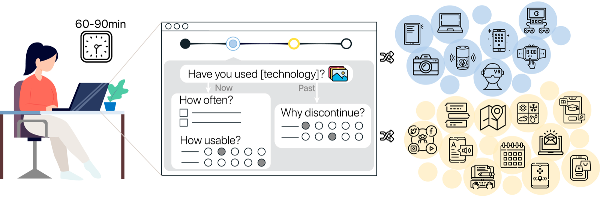

Research Project · Complete
National Technology Usage Survey Study with Adults with Down Syndrome

Abstract
Adults with Down syndrome (AwDS) increasingly engage with digital technologies, yet little is known about the specific tools they use and why some are discontinued. To address this gap, we piloted a modular, image-supported survey with 15 AwDS across 11 U.S. states. The survey, which took 60--90 minutes to complete, captured adoption, frequency of use, usability, and discontinuation across 30 technology categories. Our analysis revealed several trends: (1) high adoption of smartphones, messaging apps, and weather apps; (2) low usage of educational and financial tools, as well as virtual reality headsets, augmentative and alternative communication devices, and smartwatches; and (3) discontinuation that was more common for hardware than software, often linked to shifting needs, broken or shared devices, or the need for support. While participants reported interest in using technology for learning, communication, and daily living, fewer expressed interest in work-related tools. This study demonstrates the feasibility of self-reported technology research with AwDS and highlights opportunities for designing familiar and flexible tools to meet evolving needs.Adults with Down syndrome use many kinds of technology, but we knew little about which tools they use most or why they stop using some. We ran an image-supported online survey, designed to be accessible, with 15 adults with Down syndrome across 11 U.S. states, asking about 30 types of technology. Key findings: smartphones, messaging apps, and weather apps were most commonly used; educational and financial tools were used less often; and people most often stopped using a technology because their needs changed, a device broke, or they needed more support. This study shows that adults with Down syndrome can take part in technology research and share their own experiences.